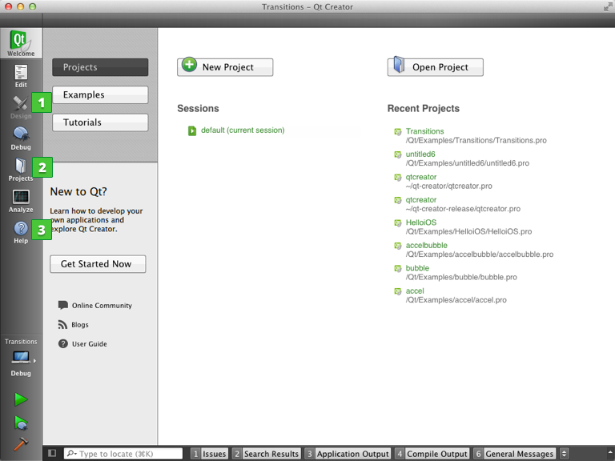

Development Tools
Qt is designed for developing applications and user interfaces once and deploying them across several desktop and mobile operating systems.
The easiest way to start application development with Qt is to download and install Qt 5. It contains Qt libraries, examples, documentation, and the necessary development tools, such as the Qt Creator integrated development environment (IDE).
Qt Creator provides you with tools for accomplishing your tasks throughout the whole application development life-cycle, from creating a project to deploying the application on the target platforms. Qt Creator automates some tasks, such as creating projects, by providing wizards that guide you step-by-step through the project creation process, create the necessary files, and specify settings depending on the choices you make. Also, it speeds up some tasks, such as writing code, by offering semantic highlighting, checking code syntax, code completion, refactoring actions, and other useful features.

The following Qt tools are integrated into Qt Creator:
- Qt Designer for designing and building graphical user interfaces (GUIs) from Qt widgets. You can compose and customize your widgets or dialogs in a visual editor, and test them using different styles and resolutions. You can access Qt Designer from Qt Creator in the Design mode (1).
- qmake for building applications for different target platforms. You can also use other build automation tools, such as CMake, Qbs, or Autotools. When using qmake or CMake, you specify the build system in the Projects mode (2). When using Qbs or Autotools, you open a .qbs or .am file in Qt Creator.
- Qt Linguist for localizing applications. Qt Linguist contains tools for the roles typically involved in localizing applications: developers, translators, and release managers. You can run the lupdate and lrelease tools from the Qt Creator Tools menu.
- Qt Assistant for viewing Qt documentation. You can also view documentation in Qt Creator. The documentation installed with Qt 5 is displayed automatically in the Help mode (3), and you can add documents to the list.
In addition, you can use the tools listed in the following table.
| Tool | Description |
|---|---|
| makeqpf | Create pre-rendered fonts for embedded devices. |
| Meta-Object Compiler (moc) | Generate meta-object information for QObject subclasses. |
| User Interface Compiler (uic) | Generate C++ code from user interface files. |
| Resource Compiler (rcc) | Embed resources into Qt applications during the build process. |
| Qt D-Bus XML compiler (qdbusxml2cpp) | A tool to convert D-Bus interface descriptions to C++ source code. |
| D-Bus Viewer | A tool to introspect D-Bus objects and messages. Available from the Qt SDK or the Qt 5 qttools repository. |